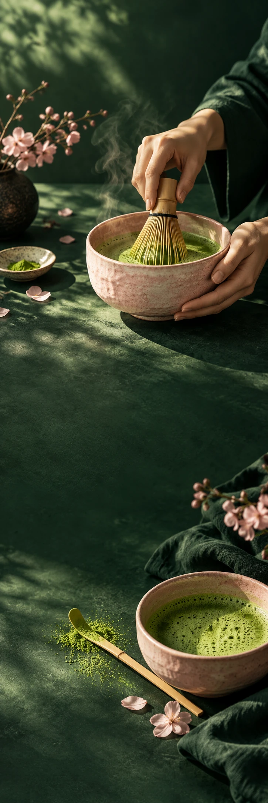

MATCHA MONDAY
Matcha & theeRitueelcampagne
WHISK. SIP. REPEAT.
EVEN
OP GROEN.
Ontdek je ritueel MATCHA MONDAY / VAN DICHTBIJ
Van poeder
naar pauze.
Schep je matcha in een kom, klop rustig op en voeg toe wat jij lekker vindt. Warm of met ijs: dit moment is van jou.
01Scheppen
02Kloppen
03Even zitten
Make time
for green.
Niet alles hoeft sneller.
Ontdek je ritueel